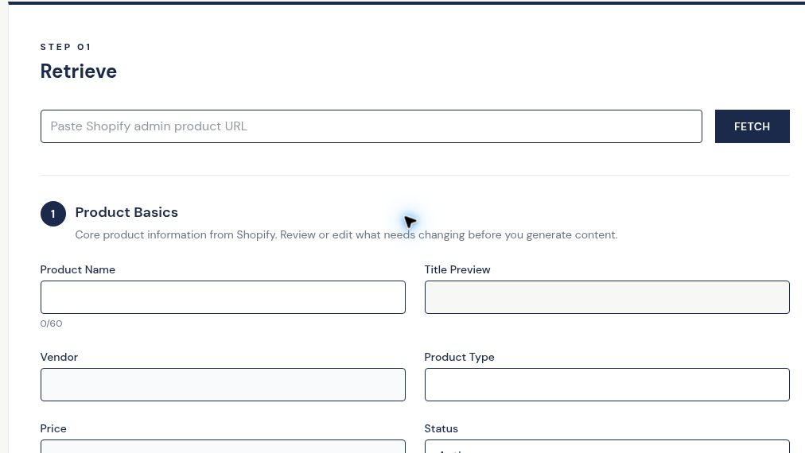

Retrieve
Paste the Shopify product URL. penstack retrieves the product data you already have.
LESS GRUNT WORK. MORE OF WHAT MATTERS.
penstack replaces the scattered, repetitive work of getting Shopify products online so you can spend less time on admin and more time creating, merchandising, marketing, growing your business, or logging off.

WHY IT EXISTS
Setting up complete Shopify product listings is repetitive, time-consuming work. It can drain your energy and pull you away from the strategy, creativity, and big ideas that actually move your business forward. penstack was created to give you more time for what you care about.
HOW IT WORKS
penstack turns the messy middle between a product URL and a publish-ready listing into one connected workflow.
Paste the Shopify product URL. penstack retrieves the product data you already have.
Generate and organize the content, discovery fields, product details, tags, collections, and image information.
Edit, refine, and approve the complete product before anything goes back to Shopify.
Send the finished product back to Shopify when you decide it is ready.
Multiple tools, repeat entry, manual handoffs, and another pass to make sure nothing was missed.
From product URL to publish-ready content with the moving pieces kept together.
EVERYTHING IT HANDLES
The workflow keeps the work connected without turning the homepage into a tour of every screen.
Editable first drafts built from the product data you already have.
Apply long-tail keyword strategy faster while keeping structured product copy and metadata together.
Keep image details, accessible alt text, and image naming inside the product workflow.
Handle Product Basics, Shopify custom fields, and metadata without another admin pass.
Organize products as part of the same workflow instead of cleaning everything up later.
Paid plans include a ten-question quiz so drafts start closer to the way your brand actually sounds.
You stay in control. Edit, approve, and decide what is ready before publishing.
Push the finished product back to Shopify when you are ready.
3 STEPS TO GET STARTED
Choose the capacity that fits your business.
Securely connect your Shopify store.
Paste a Shopify admin product URL and let penstack retrieve the product.
With one ten-question quiz, penstack adopts your voice so drafts start closer to how your brand actually sounds.
Assign product organization as part of the same workflow instead of doing another admin pass later.
LESS ADMIN. MORE GROWTH.
See exactly what penstack does from product URL to publish, then get back to the work that actually needs you.
See how penstack works →